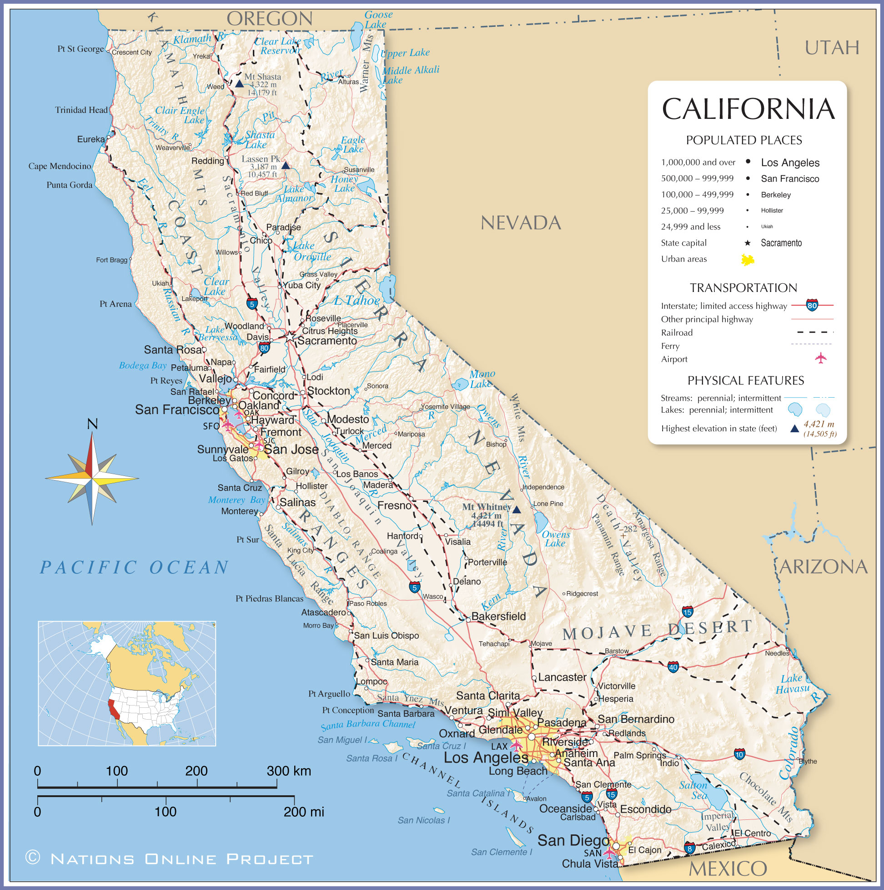
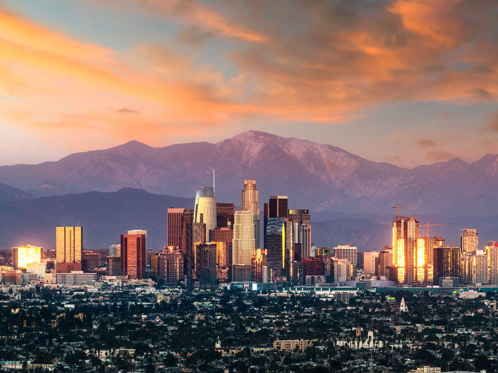

California
California is a state in the Western United States, located along the Pacific Coast.
With nearly 39.2 million residents across a total area of approximately 163,696 square miles (423,970 km2),it is the most populous U.S. state and the 3rd largest by area.
It is also the most populated subnational entity in North America and the 34th most populous in the world. The Greater Los Angeles area and the San Francisco Bay Area are the nation's second and fifth most populous urban regions respectively, with the former having more than 18.7 million residents and the latter having over 9.6 million.
Sacramento is the state's capital, while Los Angeles is the most populous city in the state and the second most populous city in the country. San Francisco is the second most densely populated major city in the country. Los Angeles County is the country's most populous, while San Bernardino County is the largest county by area in the country.
California borders Oregon to the north, Nevada and Arizona to the east, the Mexican state of Baja California to the south; and has a coastline along the Pacific Ocean to the west.
The economy of the state of California is the largest in the United States, with a $3.4 trillion gross state product (GSP) as of 2022.It is
the largest sub-national economy in the world. If California were a sovereign nation, it would rank as the world's fifth-largest economy as of 2022, behind Germany and ahead of India, as well as the 37th most populous.
The Greater Los Angeles area and the San Francisco Bay Area are the nation's second- and third-largest urban economies ($1.0 trillion and $0.5 trillion respectively as of 2020).The San Francisco Bay Area Combined Statistical Area had the nation's highest gross domestic product per capita ($106,757) among large primary statistical areas in 2018, and is home to five of the world's ten largest companies by market capitalization and four of the world's ten richest people.

Los Angeles often referred to by its initials L.A., is the largest city in the state of California and the second most populous city in the United States after New York City, as well as one of the world's most populous megacities.
Los Angeles is the commercial, financial, and cultural center of Southern California. With a population of roughly 3.9 million residents within the city limits as of 2020, Los Angeles is known for its Mediterranean climate, ethnic and cultural diversity, being the home of the Hollywood film industry, and its sprawling metropolitan area.
The city of Los Angeles lies in a basin in Southern California adjacent to the Pacific Ocean in the west and extending through the Santa Monica Mountains and north into the San Fernando Valley, with the city bordering the San Gabriel Valley to its east. It covers about 469 square miles (1,210 km2), and is the county seat of Los Angeles County, which is the most populous county in the United States with an estimated 9.86 million residents as of 2022.
The city's street patterns generally follow a grid plan, with uniform block lengths and occasional roads that cut across blocks. However, this is complicated by rugged terrain, which has necessitated having different grids for each of the valleys that Los Angeles covers.
Major streets are designed to move large volumes of traffic through many parts of the city, many of which are extremely long; Sepulveda Boulevard is 43 miles (69 km) long, while Foothill Boulevard is over 60 miles (97 km) long, reaching as far east as San Bernardino.
Drivers in Los Angeles suffer from one of the worst rush hour periods in the world, according to an annual traffic index by navigation system maker, TomTom. LA drivers spend an additional 92 hours in traffic each year. During the peak rush hour, there is 80% congestion, according to the index.
Los Angeles is often characterized by the presence of low-rise buildings, in contrast to New York City. Outside of a few centers such as Downtown, Warner Center, Century City, Koreatown, Miracle Mile, Hollywood, and Westwood, skyscrapers and high-rise buildings are not common in Los Angeles.
The few skyscrapers built outside of those areas often stand out above the rest of the surrounding landscape. Most construction is done in separate units, rather than wall-to-wall. That being said Downtown Los Angeles itself has many buildings over 30 stories, with fourteen over 50 stories, and two over 70 stories, the tallest of which is the Wilshire Grand Center.
Also Los Angeles is increasingly becoming a city of apartments rather than single-family dwellings, especially in the dense inner city and Westside neighborhoods.

San Francisco officially the City and County of San Francisco, is the commercial, financial, and cultural center of Northern California in the United States. The city proper is the fourth most populous in California and 17th most populous in the United States, with 815,201 residents as of 2021.
It covers a land area of 46.9 square miles (121 square kilometers), at the end of the San Francisco Peninsula, making it the second most densely populated large U.S. city after New York City, and the fifth most densely populated U.S. county, behind only four of the five New York City boroughs.
Among the 91 U.S. cities proper with over 250,000 residents, San Francisco was ranked first by per capita income (at $160,749) and sixth by aggregate income as of 2021.
Colloquial nicknames for San Francisco include SF, San Fran, The City, Frisco, and Baghdad by the Bay.
San Francisco and the surrounding San Francisco Bay Area are a global center of economic activity and the arts and sciences, spurred by leading universities, high-tech, healthcare, FIRE, and professional services sectors.
As of 2020, the metropolitan area, with 6.7 million residents, ranked 5th by GDP ($874 billion) and 2nd by GDP per capita ($131,082) across the OECD countries, ahead of global cities like Paris, London, and Singapore.
San Francisco anchors the 13th most populous metropolitan statistical area in the United States with 4.6 million residents, and the fourth-largest by aggregate income and economic output, with a GDP of $669 billion in 2021.The wider San Jose-San Francisco-Oakland, CA Combined Statistical Area is the fifth most populous, with 9.5 million residents, and the third-largest by economic output, with a GDP of $1.25 trillion in 2021.
In the same year, San Francisco proper had a GDP of $236.4 billion, and a GDP per capita of $289,990.
San Francisco was ranked seventh in the world and third in the United States on the Global Financial Centres Index as of March 2022.
Transit is the most used form of transportation every day in San Francisco. Every weekday, more than 560,000 people travel on Muni's 69 bus routes and more than 140,000 customers ride the Muni Metro light rail system.
32% of San Francisco residents use public transportation for their daily commute to work, ranking it first on the West Coast and third overall in the United States.
The San Francisco Municipal Railway, primarily known as Muni, is the primary public transit system of San Francisco. Muni is the seventh-largest transit system in the United States, with 210,848,310 rides in 2006.The system operates a combined light rail and subway system, the Muni Metro, as well as large bus and trolley coach networks.
Additionally, it runs a historic streetcar line, which runs on Market Street from Castro Street to Fisherman's Wharf.It also operates the famous cable cars,which have been designated as a National Historic Landmark and are a major tourist attraction.
Bay Area Rapid Transit (BART), a regional Rapid Transit system, connects San Francisco with the East Bay and San Jose through the underwater Transbay Tube.
The line runs under Market Street to Civic Center where it turns south to the Mission District, the southern part of the city, and through northern San Mateo County, to the San Francisco International Airport, and Millbrae.
Another commuter rail system, Caltrain, runs from San Francisco along the San Francisco Peninsula to San Jose.[353] Historically, trains operated by Southern Pacific Lines ran from San Francisco to Los Angeles, via Palo Alto and San Jose.